Develop a portable family-friendly exhibit setup that engages children and their caregivers in activities that foster contemplation, conversations, behaviors and practices that unpack a socio-emotional skill area.
Thank You For...
An interactive gratitude wall exhibit for the Kindness Gallery at the Children's Museum of Pittsburgh, designed to hit SEL goals, where children can better recognize other people’s actions and develop gratitude.
Ideation, concept art, laser cutting, fabrication, 2D artist, playtesting data collector.
ROLE
Artist, fabricator, data collector
TIMELINE
Spring 2026

Design Brief
Exhibit Description
Thank You For… explores how children can practice gratitude by recognizing how acts of service support them and show care, while connecting these experiences to how kindness makes them feel and inspires them to treat others with kindness. Let's celebrate the people who choose kindness and learn how we can share it with others!


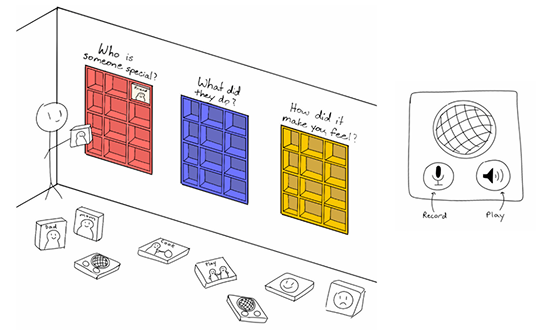
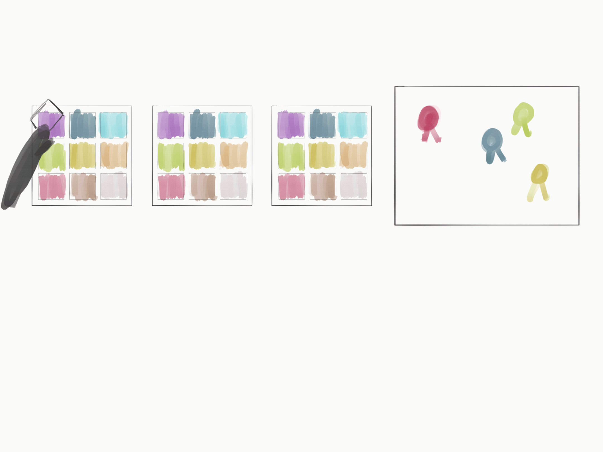
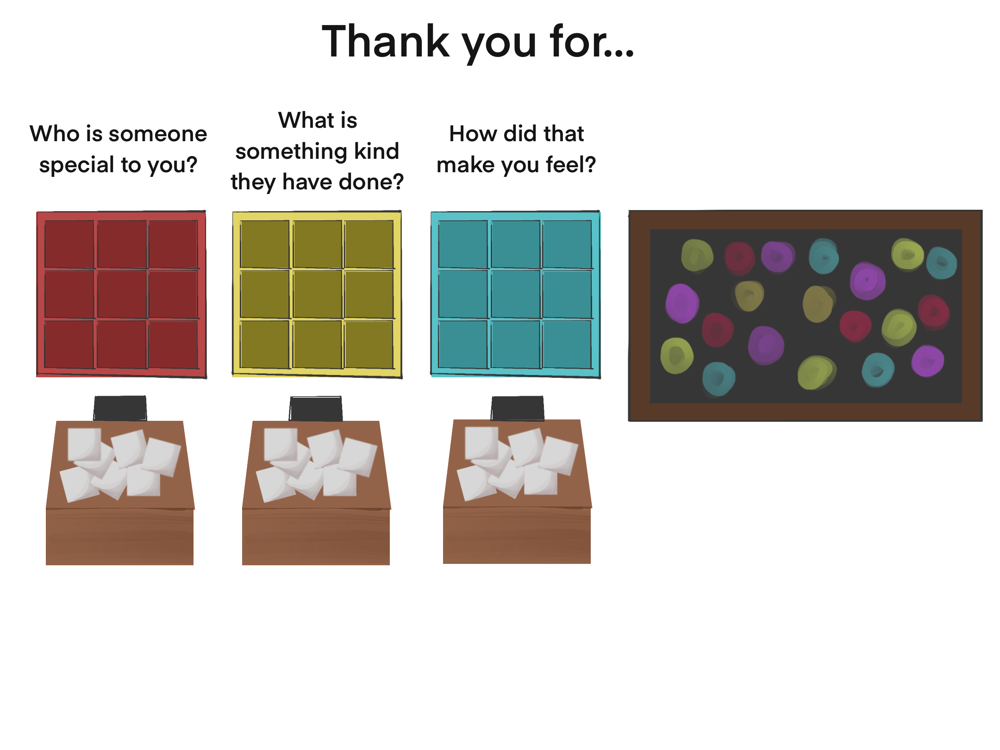
Concept Iterations.
Research: Squishy Topics Conversations
Activity: Make an award!
Children were asked to pick an adjective that best described themself or someone else. They
were
then prompted to draw anything that represented either themself or someone else embodying
that
adjective.
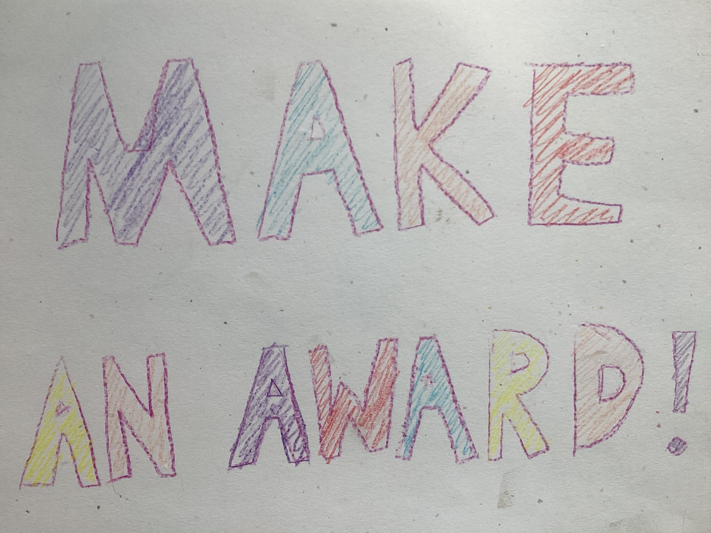
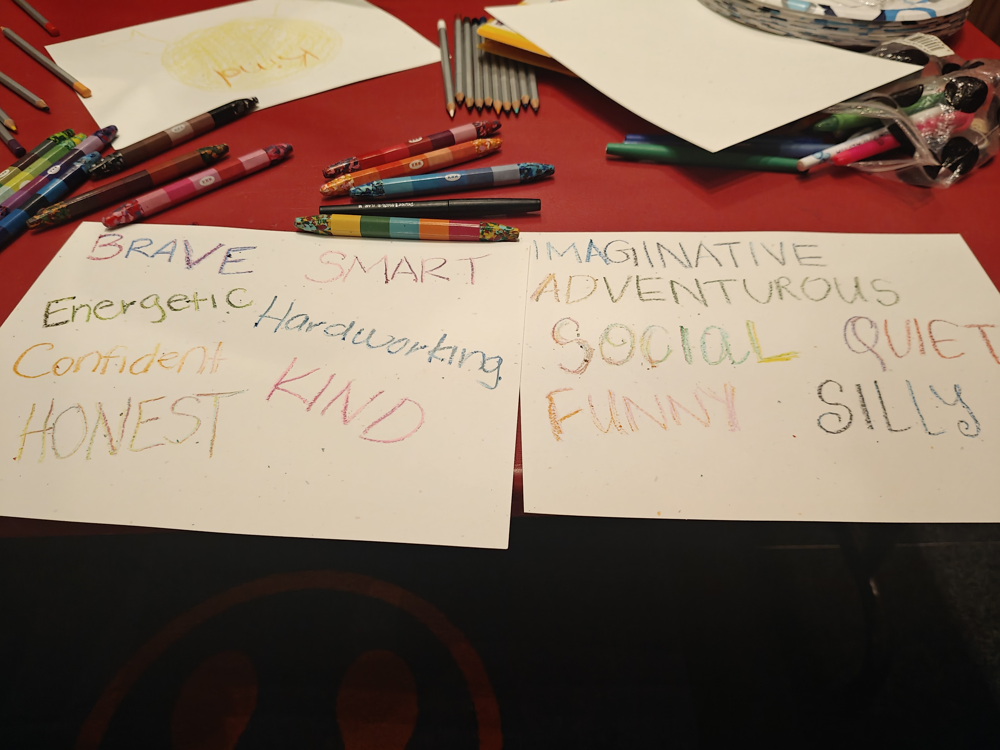
Setup.
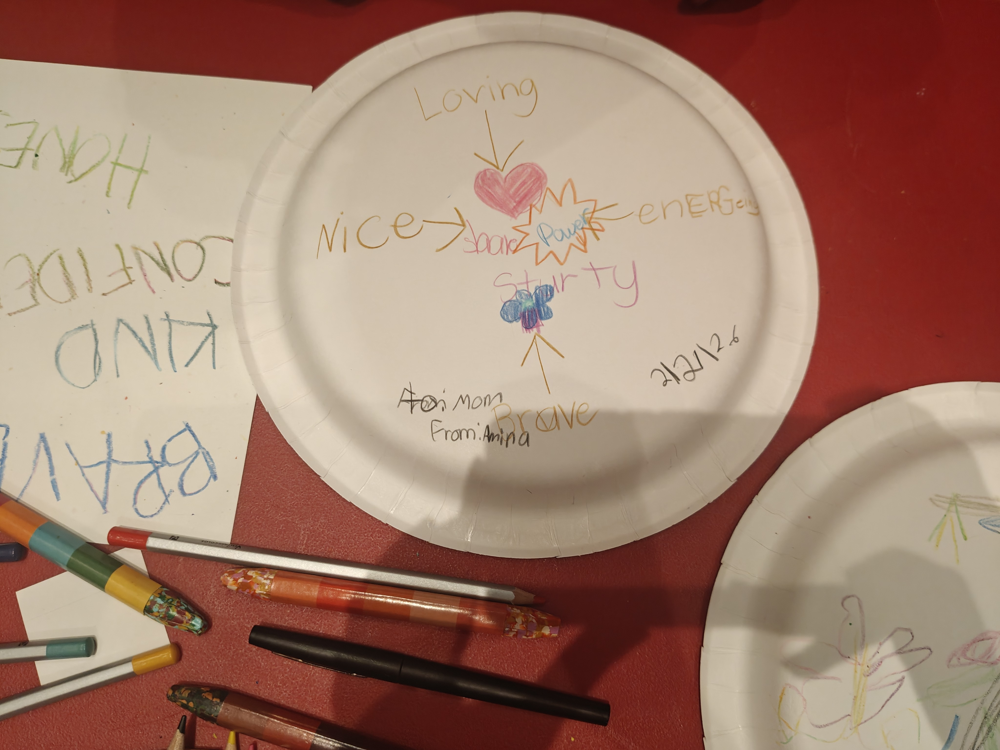
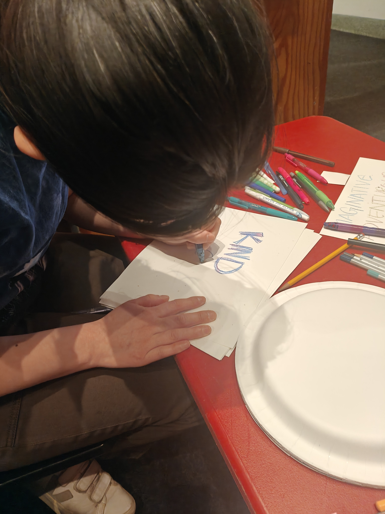
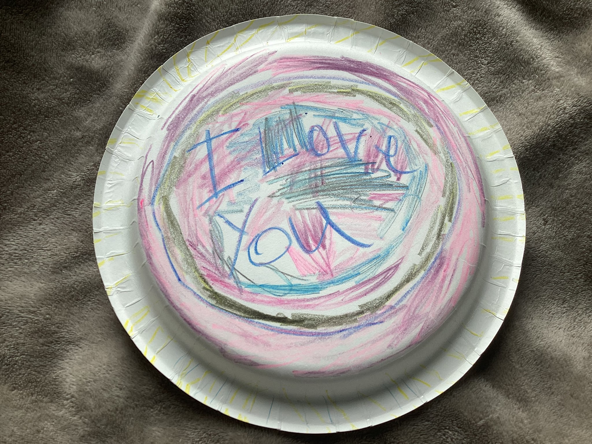
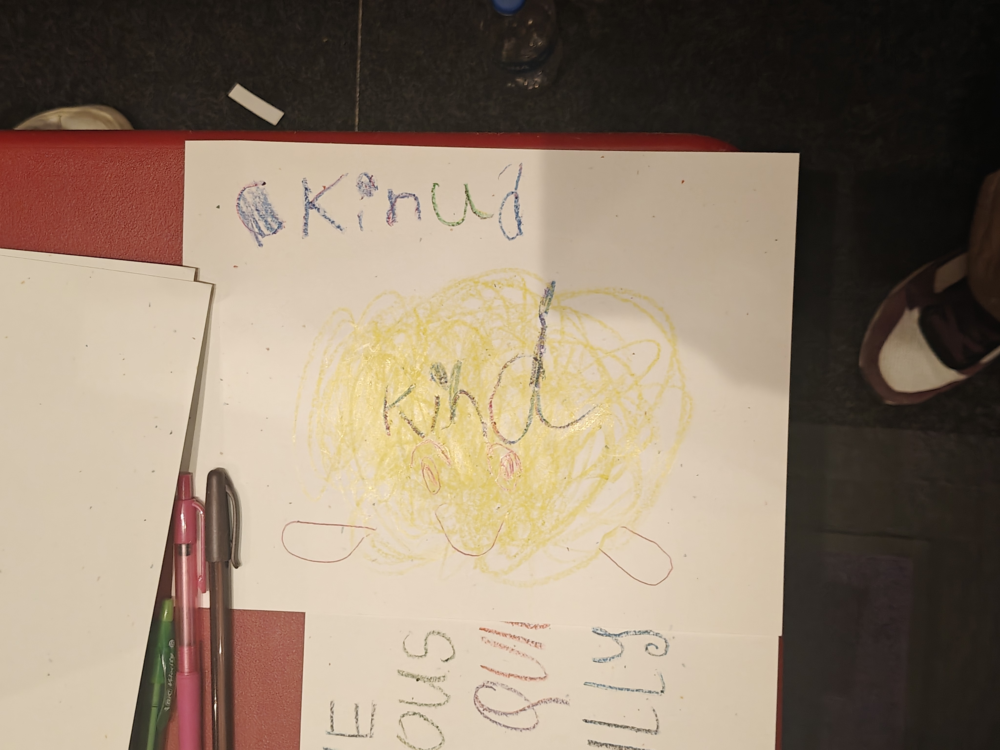
Awards created.
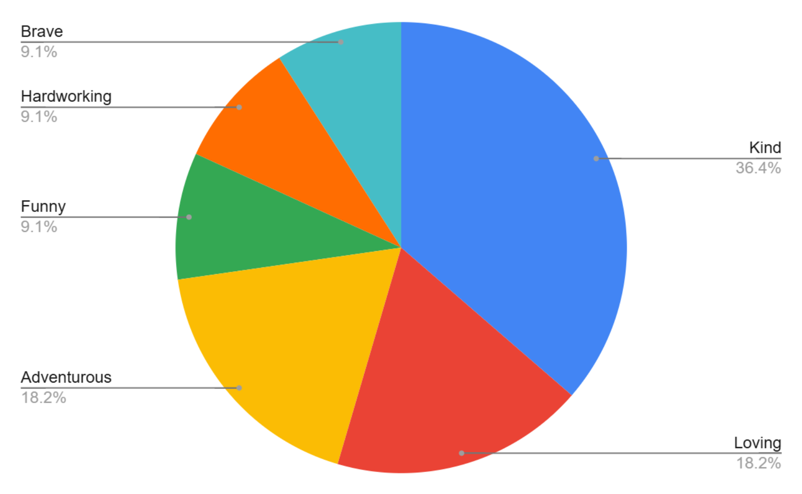
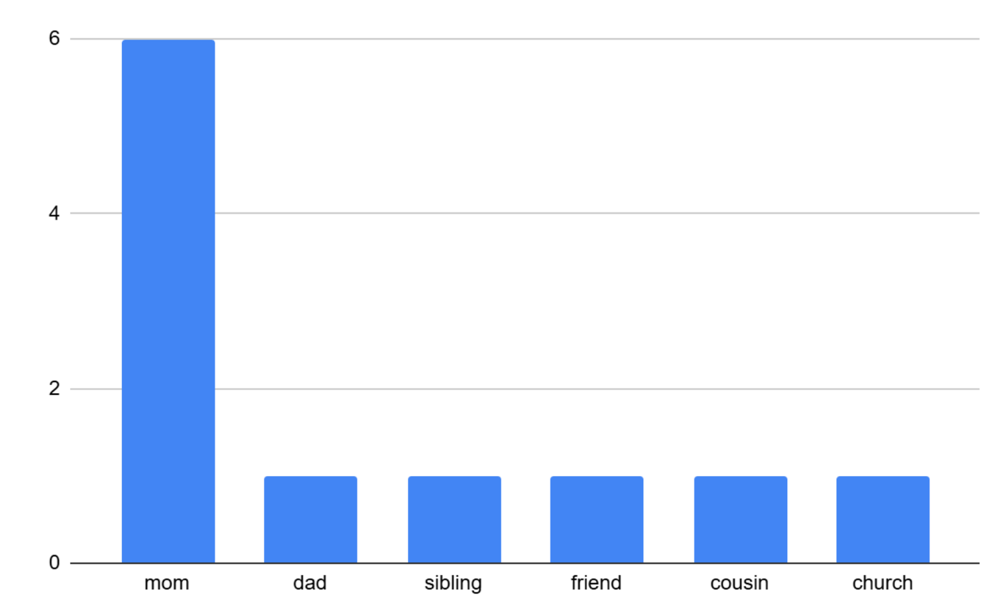
Findings: chosen traits and chosen subjects.
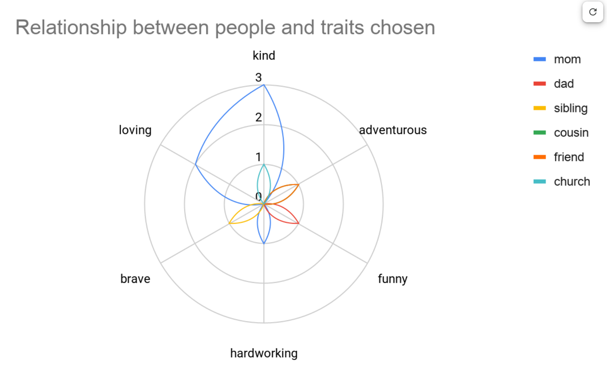
Findings: Subject’s Relationship to the Award Recipient and What Trait they Chose.
Experience Map
Storyboards and experience journey maps
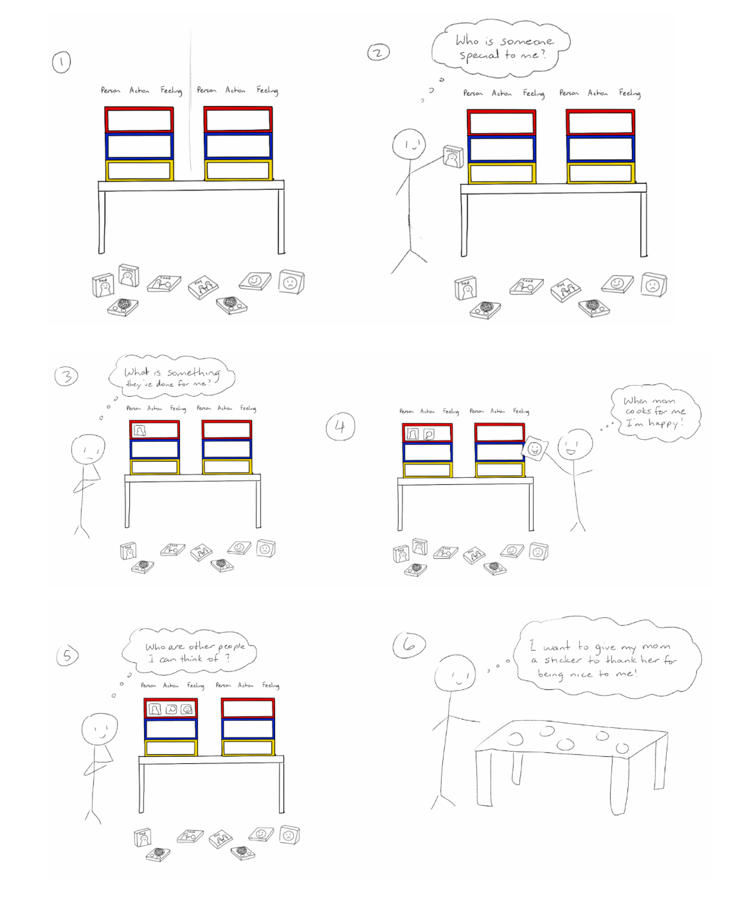

Prototyping and Playtesting
Playtesting at the Children's Museum Tent during CMU's Spring Carnival.


Photography by José Francisco Mireles Macario.
Formative Evaluation Plan
Study Objectives:
The purpose of the evaluation is to continue gauging if the experience helps children connect acts of service others do for them to gratitude. The experience is aimed to help children recognize how kind actions affect them and how they can pass the kindness along. After our last playtest evaluation we understand where our project had room for improvement and we are planning to use the feedback to help strengthen our questions and data collection processes.


Guiding Research Questions:
| SEL Research Question | What will count as evidence (indicators) | How will you collect data |
|---|---|---|
| Are visitors able to identify/recognize something someone has done for them that they're thankful for? | The visitor can answer the "What have they done that you're thankful for?" question without further probing/facilitation. |
|
| Are visitors able to express how they feel from those actions? | The visitor can answer "How does that make you feel?" question without further probing/facilitation. |
|
| Did the visitor express gratitude towards those actions? |
|
|
| Did visitors understand what to do without the facilitator? |
|
|
| Where do visitors get confused? |
|
|


Mixed Method Data Collection Plan:
Role 1 – Facilitator
Introduction
"Welcome to our experience! We are students from Carnegie Mellon University testing class project ideas for Children's Museum of Pittsburgh about emotions." "Also before we get you started is it ok if we note any observations we have as you interact with the experience?" "Also would it be ok if we took photos to help document our project?"
Initiate Exhibit
"Can you think of a special person in your life?" "What is something they did that you remember?" "How did it make you feel?" "Why did you pick that block/response?"
For Adults (The "Why")
The goal of this project is to help children practice gratitude by recognizing how acts of service support them and show care, while connecting these experiences to how kindness makes them feel and inspires them to treat others with kindness.
Role 2 – Observer (Behavior Focus)
Format: Written notes - open ended
Observe and Write Down:- What do people do?
- Where is their attention? Do parents and children focus on different things?
- Do visitors struggle to figure out what to do? What seems to cause this?
- Are instructions clear and intuitive? When does the facilitator step in?
- Do visitors have difficulty using parts of the exhibit?
- How long do they stay? Why do they leave?
Role 3 – Listener (Talk Focus)
Format: Google Form
Listen for, record, and photograph:- What are visitors saying, and to whom?
- What questions do they ask (to you or each other)?
- Do you hear any learning talk or discussion about your SEL topic?
- Do people make personal connections or references?
Role 4 – Technician/Operations
Running the technical aspects of the awards and concluding the experience.
"Would you mind answering a few questions before you head out?" (Fill out the Google Form Link on behalf of the participant) "Thanks so much for taking the time to try out our experience!"
Methodology & Data Collection
- Behavioral: Observational written notes.
- Visual/Auditory: Photographic records and detailed notes on visitor dialogue (Role 3).
Study
Data collected and inferences drawn.
Reporting Items
- Total number of participants N = 10
- Adults accompanying the child did not participate in the exhibit; they either observed or facilitated
- 10/10 participants were accompanied by an adult
- 4/10 participants were also accompanied by another child (friend/sibling)
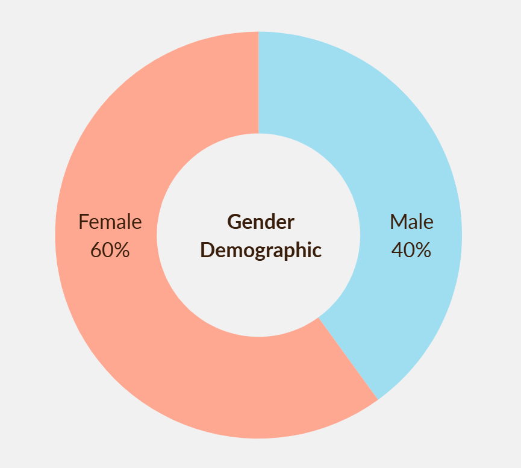
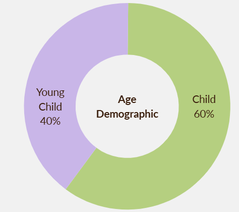
Overall Data
The responses from all participants are shown below. Note that some participants completed the activity multiple times, and all of their attempts were included. Additionally, 3 participants (#3-YC-F, #7-YC-M, and #9-YC-M) did not fully complete the exhibit/left some questions blank. 1 “What did they do?” response was missed during observation.
| Who is someone you’re thankful for? | What did they do that you’re thankful for? | How did it make you feel? |
|---|---|---|
|
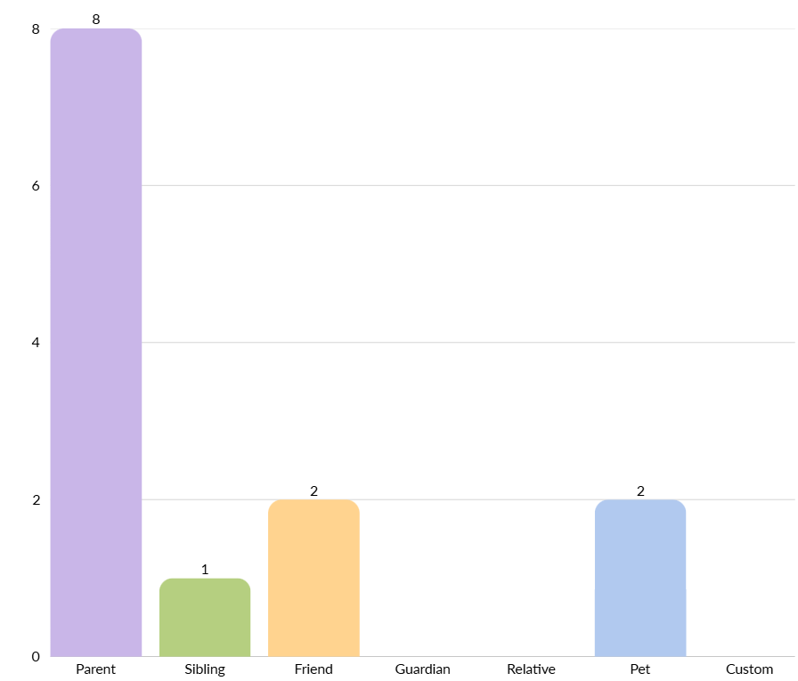 |
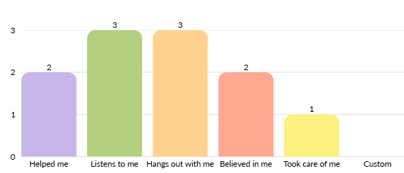 |
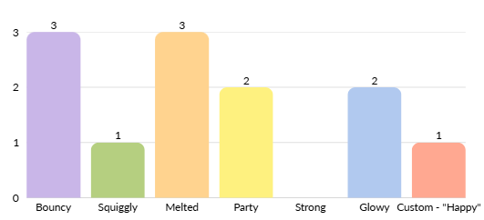 |
Behavior Data Coding
| Patterns | Data Collection Method | |
|---|---|---|
| Engagement |
|
|
| Confusion |
|
|
Young Children (0-5yr) Findings
- 3 participants fully completed exhibit at least once
- #7-YC-M left before completing “Feeling”
- #9-YC-F left before completing “Person” and “Action” on 2nd try
- All participants were mostly nonverbal
- All participants displayed hesitation & needed facilitator/parent’s help
- 2 participants answered questions out of order
- Gratitude was not observed from any participants
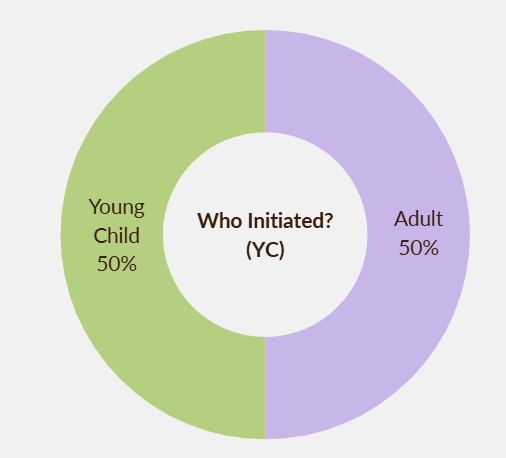
| Who is someone you’re thankful for? | What did they do that you’re thankful for? | How did it make you feel? |
|---|---|---|
|
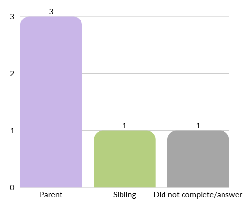 |
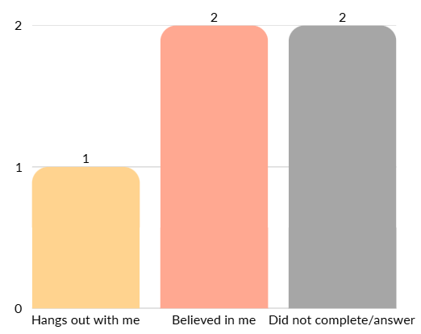 |
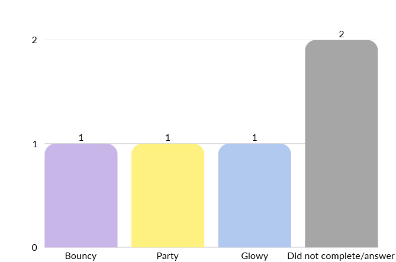 |
Children (6-10yr) Findings
- 6 participants fully completed exhibit at least once
- #4-C-M completed exhibit 3x
- #10-C-M completed exhibit 2x
- 4 participants chose blocks immediately
- 2 participants asked for clarification
- #4-C-M asked “What is this?” to the reflective & feeling blocks
- Participants were observed to be generally more talkative than YC
- 2 participants answered questions out of order
- 5 participants thanked us at the end of the exhibit
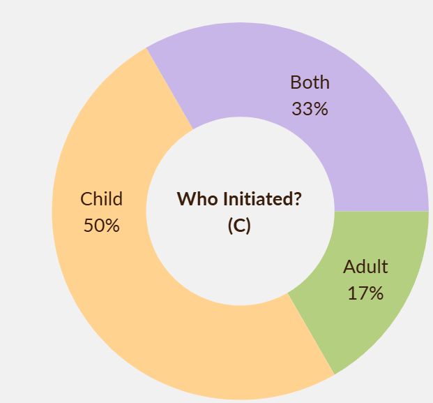
| Who is someone you’re thankful for? | What did they do that you’re thankful for? | How did it make you feel? |
|---|---|---|
|
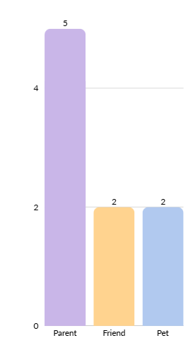 |
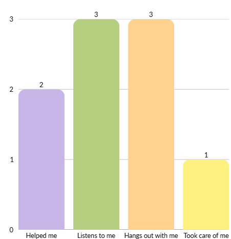 |
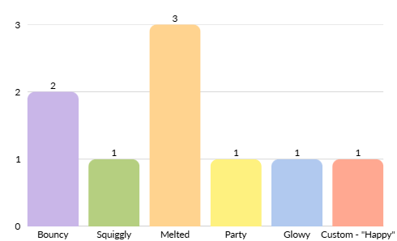 |
Notable Observations
| Gratitude Behaviors | Confusion Behaviors |
|---|---|
| #4-C-M displayed strong gratitude and gave the facilitator a hug upon receiving the award sticker |
#10-C-M asked "what do you do after this?" after placing person block
|
#3-YC-F reached out for the award stickers and said "I want thank you". She then
gave it to her
dad
|
#4-C-M asked "what is this?" to the reflective blocks and feeling blocks
|


Overall Findings
Finding 1
Children were generally better at understanding and completing the activity than Young Children.
Finding 2
Children tended to be more vocal if they were confused or curious.
Finding 3
Young Children were mostly nonverbal and facilitation did not necessarily improve completion.
Finding 4
All participants could identify someone they were thankful for.
Finding 5
Children expressed gratitude more readily than Young Children.
Finding 6
Caregiver guidance improved completion but often shifted responses.
Content/Usability Issues Discovered During Exhibit
Accompanying adults would often act as facilitators if the child was confused or couldn’t read
#7-YC-M initiated with the exhibit, but he walked away when he saw one of the shelves was full (even though the other shelf had empty rows)
Some participants struggled to place the blocks in the shelves, and we had to hold the shelves down as they put it in
We would occasionally have to reset the blocks if the shelves were full, or if the blocks were scattered on the floor and not in the baskets
Overall Findings
Our sample size of N=10 is relatively small and therefore may not be fully representative of the general public
Visual features of the design–use of prime colors & simplistic appearance–seemed to be attracting children too young for the activity and discouraging targeted age groups. This caused many of our observations with YC to rely heavily on facilitation
This could push us to research design elements that are equally appealing to older kids, but accessible for younger children as well.
“Guardian” and “Relative” blocks were never used, indicating that they were possibly too legal-jargon for children
There needs to be a balance between blocks being specific vs general
Most of the feeling blocks were justified because they represented happiness, suggesting kids still struggled with associating gratitude with more complex feelings
Museum Recommendations
The team's recommendations to the Children's Museum of Pittsburgh
Our team successfully applied the Play with Real Stuff design philosophy by allowing children to physically engage with blocks as part of their response & interaction with the exhibit.
If we were to further develop our exhibit, we would want to display the award stickers on the wall for visitors to see. This could be through either a projector onto a wall, or a display screen specifically for this purpose.
More engagement is required to deepen socio-emotional learning for children, and we believe that we should give more agency to visitors instead of facilitating them throughout the entire exhibit.
Additionally, our current exhibit relies on some physical ability since visitors have to pick up and place blocks, so incorporating other ways the visitor can respond to the questions, pressing a button, recording a response, etc., can make our design more inclusive.
Our current blocks had very generalized cartoon characters for the sake of easier prototyping, but we could expand the blocks to be more diverse, or contain additional accessibility features such as braille.
To further develop the activity for older children we would continue to refine the visual aesthetics and work on making the difficulty level more scalable for different age ranges.
This could include adding optional challenges and prompts to give them more opportunities to demonstrate the developmental milestones they resonate with.
We would continue to delve into the storytelling aspect to help brainstorm meaningful and relatable actions, choices, and consequences.
These could be framed within reflection surrounding gratitude or go broader on the impact that people’s actions have on each other.
This would continue to reinforce the primary objectives of encouraging children to work on their self and social awareness so they understand that their actions and words make an impact.
Team
Libby Egan, Jillian Haguisan, Hales Wilson